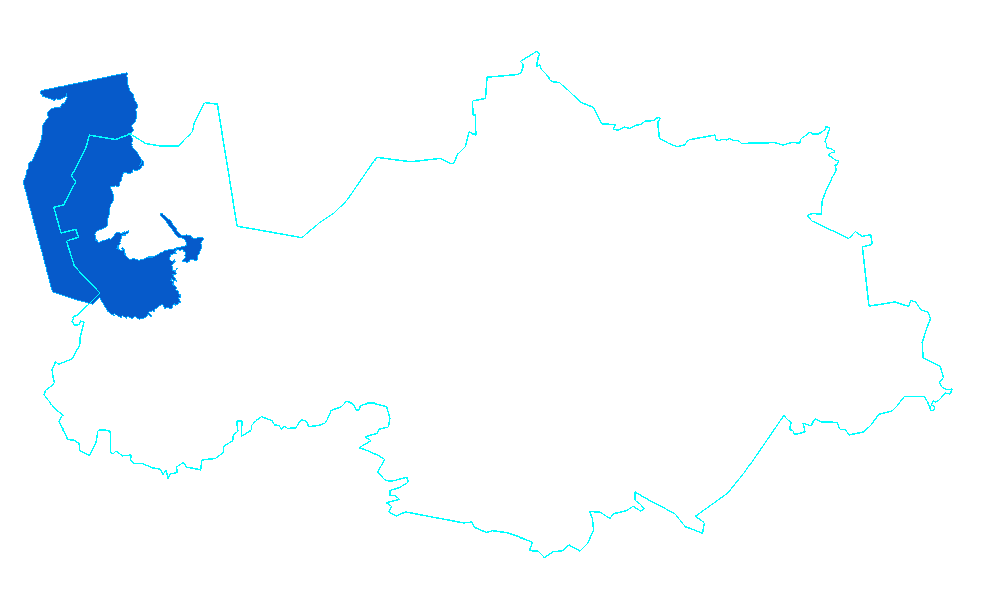
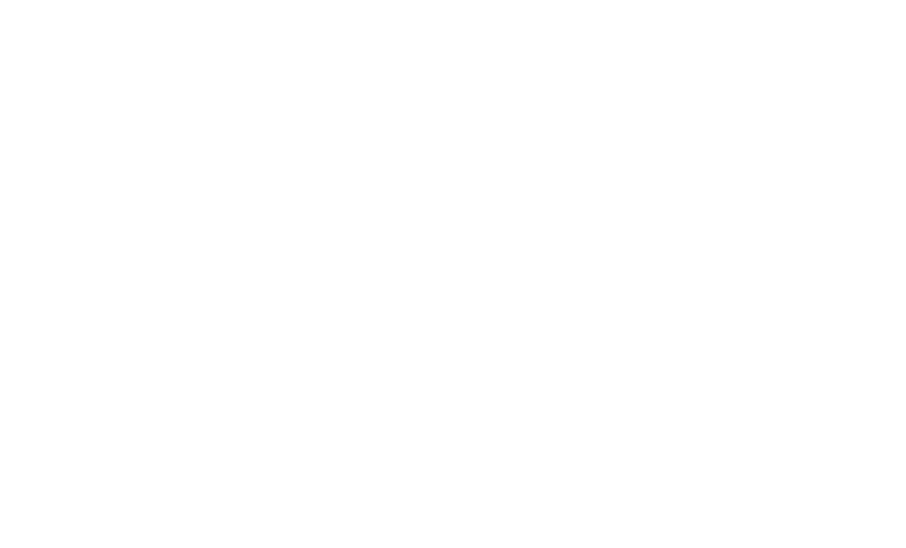
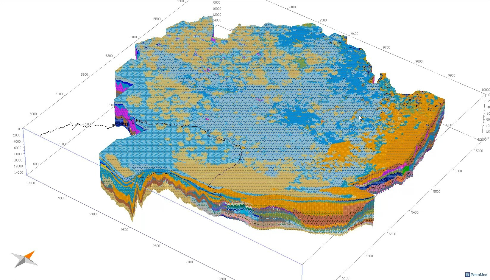
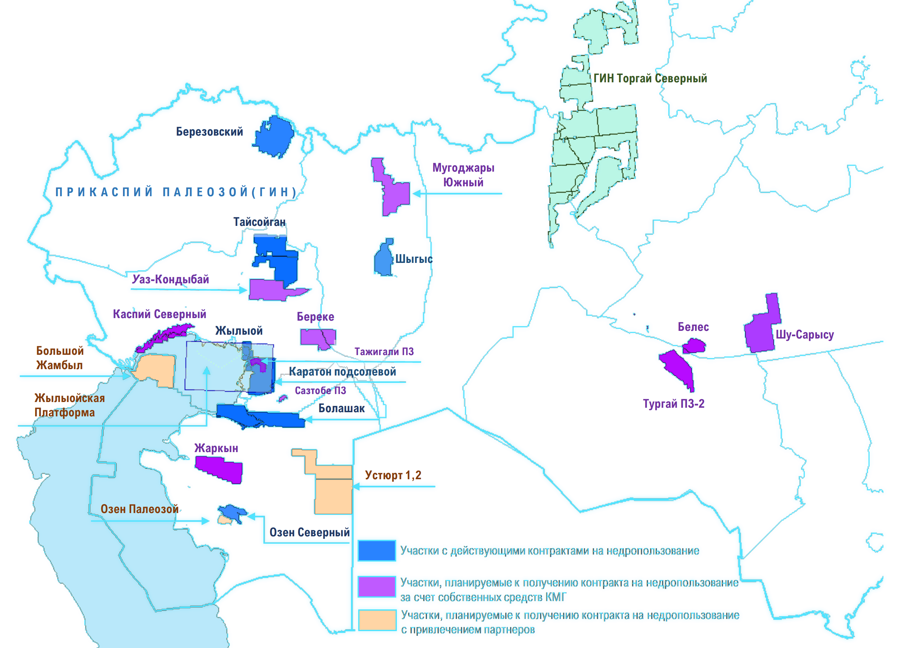

Геологоразведка · поиск и оценка участков
15 осадочных бассейнов — пять из них в цифре
- 15бассейновосадочных бассейнов на территории Казахстана — контуры на карте пунктиром
- 4бассейнамалоперспективные: Тенизский, Балхашский, Алакольский, Зайсанский
- 4бассейнас доказанной нефтегазоносностью: Прииртышский, Северо-Торгайский, Аральский, Сырдарьинский
- 5моделейцифровые бассейновые модели: Прикаспийский, Устюрт-Бозашинский, Мангышлакский, Южно-Торгайский, Шу-Сарысуский — структурные карты и очаги генерации УВ
- 748млн т ЖУостаточные извлекаемые запасы (ABC1 на 01.01.2026) — основа в этих бассейнах




Карта — Департамент геологоразведки КМГ
цифровые бассейновые модели
доказанная нефтегазоносность
малоперспективные
Геологоразведка · цифровая бассейновая модель · Прикаспий
Прикаспий в цифре: от поверхности девона до очага генерации


Структурная поверхность девона (D3)глубины от −4 000 до −14 000 м · Petrel
Очаг генерации УВ3D-модель бассейна, фации по разрезу · PetroMod
Департамент геологоразведки КМГ
- 1Структурная поверхность девона — карта глубин кровли девона по всему бассейну; поверх неё контуры участков и месторождения
- 2Очаг генерации УВ — объёмная модель бассейна: где нефть образовалась, куда мигрировала и где могла скопиться
- 34%территории страны покрыто пятью цифровыми бассейновыми моделями
Геологоразведка · цифровые бассейновые модели
Бассейновое моделирование: живая цифровая модель недр
1 / 3
Petrel · Департамент геологоразведки КМГ
- 5моделейцифровых бассейновых моделей — 34 % территории страны
- 10летцифровизация геологии начата не сегодня — основной результат: живая модель вместо бумажных карт
- 23проектапрограммы ГРР до 2030 года лежат слоем поверх модели
- 4,7млрд т у.т.потенциальная геологическая ресурсная база проектов
Геологоразведка · обработка и интерпретация 2D/3D
Сейсморазведка — «УЗИ недр»: от куба данных до модели ловушки
Сейсмический кубразрезы через толщу пород
Petrel · Департамент геологоразведки КМГ
- 1Сейсмический куб — акустический «снимок» недр по площади
- 2Разрезы — геолог читает слои и разломы
- 3Интерпретация горизонтов — здесь помогут ML и нейросети (в работе)
- 4Структура-ловушка — где нефть могла скопиться
- 5Геологическая модель — основа для точки бурения и оценки запасов
Геологоразведка · программа ГРР до 2030 года
Портфель разведочных проектов на карте бассейнов
- 23проектана разных стадиях подготовки · 26 поисковых скважин, проходка 89 тыс. м
- 6проектовстрановой значимости · 13 — социальной значимости
- 2D · 3Dсейсморазведка 6 250 км и 2 540 км² · региональная 2D по Прикаспию — 60 тыс. км
- 4,7млрд т у.т.потенциальная геологическая ресурсная база программы

Карта портфеля — Департамент геологоразведки КМГ